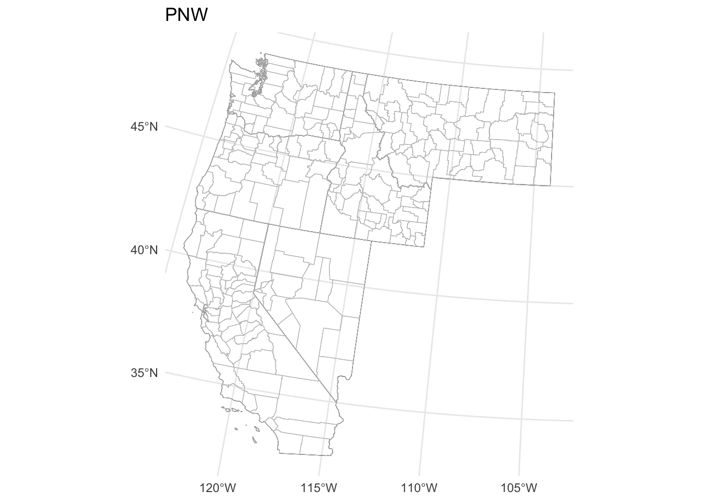
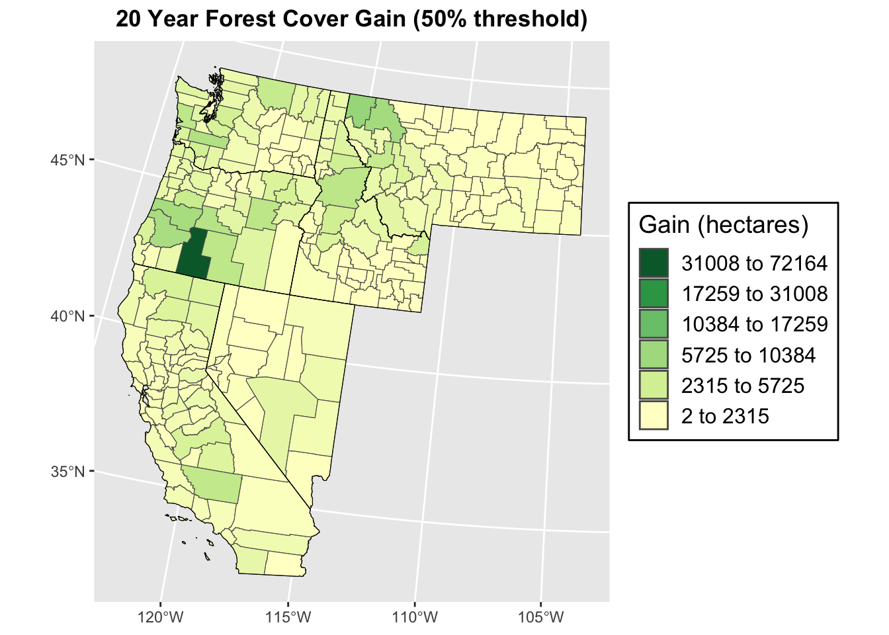
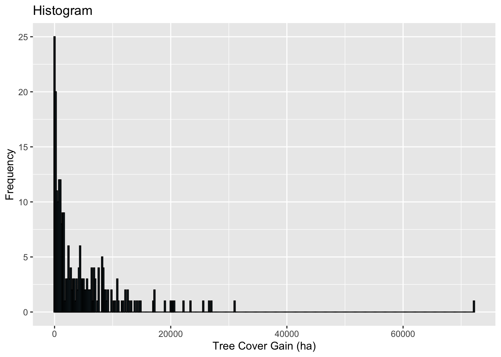
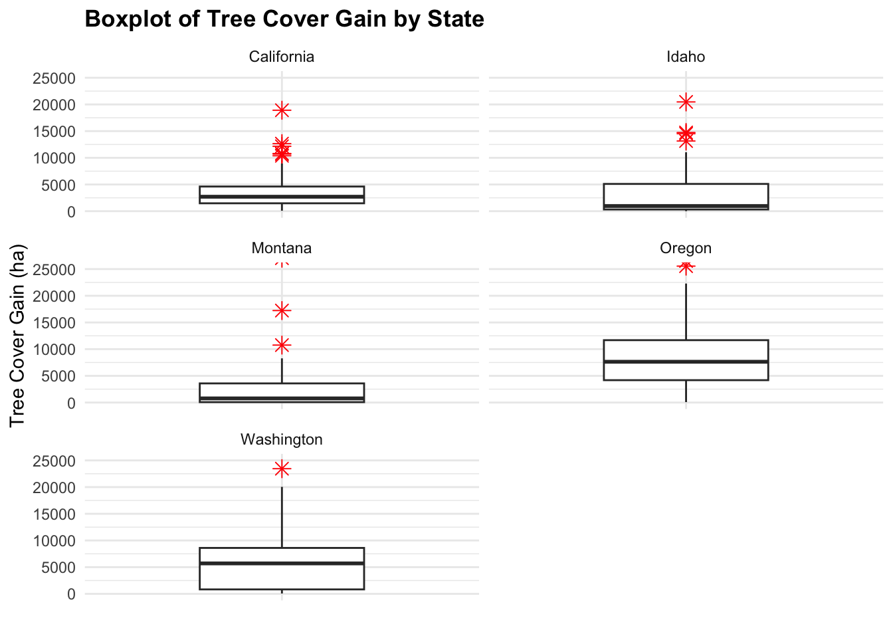
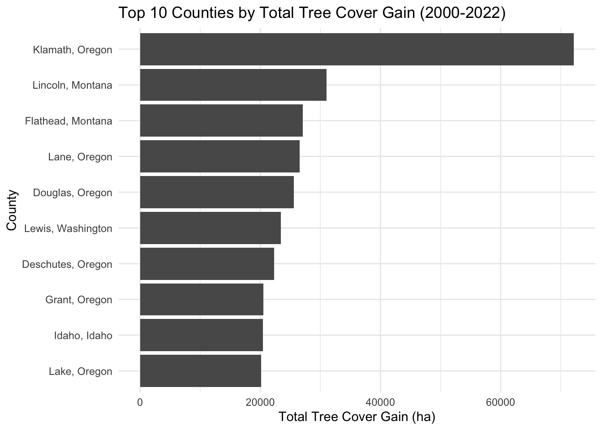
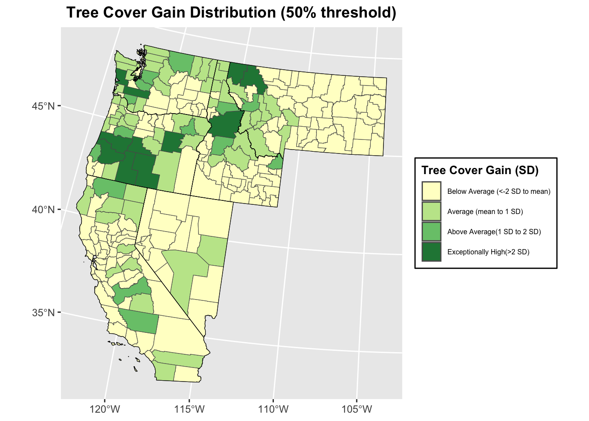

Tree Cover change in the Western U.S (50% threshold in 30m resolution)
Jesse Brodrick
2024-03-14
0.1 20 year Tree Cover Gain Mapping Anlaysis with Global Forest Watch Data
0.1.1 Reading in libraries and dataset
library(tidyverse)
library(sf)
library(ggplot2)
library(RColorBrewer)
library(tigris)
library(ggplot2)
library(classInt)
library(spdep)
getwd()## [1] "/Users/jessebrodrick/Desktop/490Pro/GEOG490"df <- read_csv("/Users/jessebrodrick/Desktop/490Pro/data/GlblFW/CTCL1.csv")## Rows: 25184 Columns: 30
## ── Column specification ───────────────────────────────────
## Delimiter: ","
## chr (3): country, subnational1, subnational2
## dbl (27): threshold, area_ha, extent_2000_ha, extent_2010_ha, gain_2000_2020_ha, tc_loss_ha_2001, tc_...
##
## ℹ Use `spec()` to retrieve the full column specification for this data.
## ℹ Specify the column types or set `show_col_types = FALSE` to quiet this message.0.1.2 Basemap and projection
# Options to return tigris objects as sf objects
options(tigris_class = "sf")
options(tigris_use_cache = TRUE)
# Obtain state boundaries
states_sf <- states(cb = TRUE)## Retrieving data for the year 2021# Obtain county boundaries
counties_sf <- counties(cb = TRUE)## Retrieving data for the year 2021# Filter for western states and their counties
western_states <- c("Washington", "Oregon", "California", "Idaho",
"Montana", "Nevada")
# Filter state and counties for western states sf
wus_states_sf <- states_sf[states_sf$NAME %in% western_states, ]
wus_counties_sf <- counties_sf[counties_sf$STATE_NAME %in% western_states, ]
# Check plot
ggplot() +
geom_sf(data = wus_states_sf, fill = NA, color = "black", size = 0.6) +
geom_sf(data = wus_counties_sf, fill = NA, color = "grey", size = 0.3) +
theme_minimal() 
# Projection
laea = st_crs("+proj=laea +lat_0=30 +lon_0=-100") # Lambert Azimuthal Equal Area
wus_states_sf_pro = st_transform(wus_states_sf, laea)
wus_counties_sf_pro = st_transform(wus_counties_sf, laea)
# Check plot
ggplot() +
geom_sf(data = wus_states_sf_pro, fill = NA, color = "black", size = 0.6) +
geom_sf(data = wus_counties_sf_pro, fill = NA, color = "grey", size = 0.3) +
theme_minimal() +
labs(title = "PNW") ### Subset and merge Global Forest Watch data and projected US Census boundaries
# Subset data based on the western states with a canopy density threshold of 50
df_subset <- df[df$subnational1 %in% western_states, ] %>%
filter(threshold == 50)
head(df_subset)## # A tibble: 6 × 30
## country subnational1 subnational2 threshold area_ha extent_2000_ha extent_2010_ha gain_2000_2020_ha
## <chr> <chr> <chr> <dbl> <dbl> <dbl> <dbl> <dbl>
## 1 United Sta… California Alameda 50 193504 21034 27052 1613
## 2 United Sta… California Alpine 50 191835 53981 40667 701
## 3 United Sta… California Amador 50 156853 38417 49461 1061
## 4 United Sta… California Butte 50 434521 163077 169724 4657
## 5 United Sta… California Calaveras 50 268505 75162 101364 2315
## 6 United Sta… California Colusa 50 301134 31108 29999 3335
## # ℹ 22 more variables: tc_loss_ha_2001 <dbl>, tc_loss_ha_2002 <dbl>, tc_loss_ha_2003 <dbl>,
## # tc_loss_ha_2004 <dbl>, tc_loss_ha_2005 <dbl>, tc_loss_ha_2006 <dbl>, tc_loss_ha_2007 <dbl>,
## # tc_loss_ha_2008 <dbl>, tc_loss_ha_2009 <dbl>, tc_loss_ha_2010 <dbl>, tc_loss_ha_2011 <dbl>,
## # tc_loss_ha_2012 <dbl>, tc_loss_ha_2013 <dbl>, tc_loss_ha_2014 <dbl>, tc_loss_ha_2015 <dbl>,
## # tc_loss_ha_2016 <dbl>, tc_loss_ha_2017 <dbl>, tc_loss_ha_2018 <dbl>, tc_loss_ha_2019 <dbl>,
## # tc_loss_ha_2020 <dbl>, tc_loss_ha_2021 <dbl>, tc_loss_ha_2022 <dbl># Merging projected SF to GFW data frame
wus_gbl_merge <- wus_counties_sf_pro %>%
left_join(df_subset, by = c("STATE_NAME" = "subnational1", "NAME" = "subnational2"))
# Replacing NA's with zero
wus_gbl_merge <- wus_gbl_merge %>%
mutate(gain_2000_2020_ha = replace_na(gain_2000_2020_ha, 0))
head(wus_gbl_merge)## Simple feature collection with 6 features and 40 fields
## Geometry type: MULTIPOLYGON
## Dimension: XY
## Bounding box: xmin: -1833052 ymin: 504019.9 xmax: -640734.2 ymax: 2117980
## Projected CRS: +proj=laea +lat_0=30 +lon_0=-100
## STATEFP COUNTYFP COUNTYNS AFFGEOID GEOID NAME NAMELSAD STUSPS STATE_NAME LSAD
## 1 30 009 01720111 0500000US30009 30009 Carbon Carbon County MT Montana 06
## 2 16 007 00395090 0500000US16007 16007 Bear Lake Bear Lake County ID Idaho 06
## 3 41 035 01155134 0500000US41035 41035 Klamath Klamath County OR Oregon 06
## 4 53 043 01514052 0500000US53043 53043 Lincoln Lincoln County WA Washington 06
## 5 06 059 00277294 0500000US06059 06059 Orange Orange County CA California 06
## 6 06 111 00277320 0500000US06111 06111 Ventura Ventura County CA California 06
## ALAND AWATER country threshold area_ha extent_2000_ha extent_2010_ha gain_2000_2020_ha
## 1 5303728455 35213028 United States 50 533358 53663 36426 385
## 2 2527123155 191364281 United States 50 271541 44456 31959 486
## 3 15410373389 484953082 United States 50 1590318 487365 427271 72164
## 4 5984421204 75265950 United States 50 605748 8713 12163 961
## 5 2053476505 406279630 United States 50 206072 10626 14559 3478
## 6 4767622161 947345735 United States 50 480834 67109 76605 2626
## tc_loss_ha_2001 tc_loss_ha_2002 tc_loss_ha_2003 tc_loss_ha_2004 tc_loss_ha_2005 tc_loss_ha_2006
## 1 235 695 92 237 326 61
## 2 22 8 1 93 34 9
## 3 4601 4274 6348 5393 3755 2991
## 4 68 98 5 378 38 180
## 5 75 108 66 84 69 481
## 6 144 1941 1957 1267 849 10156
## tc_loss_ha_2007 tc_loss_ha_2008 tc_loss_ha_2009 tc_loss_ha_2010 tc_loss_ha_2011 tc_loss_ha_2012
## 1 887 880 310 20 644 203
## 2 11 4 9 40 164 138
## 3 3675 3548 4954 1767 2594 2315
## 4 92 30 75 19 8 25
## 5 784 305 101 25 11 60
## 6 3174 1348 105 118 61 100
## tc_loss_ha_2013 tc_loss_ha_2014 tc_loss_ha_2015 tc_loss_ha_2016 tc_loss_ha_2017 tc_loss_ha_2018
## 1 41 188 135 5 1 89
## 2 58 50 2 13 68 1
## 3 2456 3880 4547 5318 8485 7872
## 4 21 33 46 93 108 74
## 5 0 4 1 19 24 854
## 6 487 81 47 207 14992 2947
## tc_loss_ha_2019 tc_loss_ha_2020 tc_loss_ha_2021 tc_loss_ha_2022 geometry
## 1 70 0 2758 255 MULTIPOLYGON (((-775324.9 1...
## 2 137 2 1 3 MULTIPOLYGON (((-957856.1 1...
## 3 5236 4434 27950 4287 MULTIPOLYGON (((-1829815 15...
## 4 72 37 36 54 MULTIPOLYGON (((-1436119 20...
## 5 357 17 14 71 MULTIPOLYGON (((-1666632 55...
## 6 263 36 19 29 MULTIPOLYGON (((-1781105 60...summary(wus_gbl_merge$gain_2000_2020_ha)## Min. 1st Qu. Median Mean 3rd Qu. Max.
## 2 588 2397 4812 6726 721640.1.3 Plotting Tree Cover Gain at 50% Canopy Cover Threshold over 20 years
# Classifying data for visualization using natural jenks method
ctpnts <- classIntervals(wus_gbl_merge$gain_2000_2020_ha, n = 6, style = "jenks")
cols <- brewer.pal(6, "YlGn")
colors <- colorRampPalette(cols)(length(ctpnts$brks)-1)
# Plotting
ggplot(wus_gbl_merge) +
geom_sf(aes(fill = gain_2000_2020_ha)) +
scale_fill_gradientn(colors = colors,
breaks = ctpnts$brks[-length(ctpnts$brks)],
labels = rev(paste(round(ctpnts$brks[-length(ctpnts$brks)], 1), "to",
round(ctpnts$brks[-1], 1))),
limits = range(wus_gbl_merge$gain_2000_2020_ha)) +
labs(title = "20 Year Forest Cover Gain (50% threshold)", fill = "Gain (hectares)") +
theme(plot.title = element_text(hjust = 0.5, face = "bold"),
legend.position = "right",
legend.background = element_rect(fill = "white", colour = "black"),
legend.key = element_blank(),
legend.text = element_text(size = 12),
legend.title = element_text(size = 14)) +
guides(fill = guide_legend(override.aes = list(fill = rev(colors)))) +
geom_sf(data = wus_states_sf_pro, fill = NA, color = "black", size = 1.5) 
0.1.4 Assess spatial distribution of Canopy Cover Gain and Descriptive statistics
# Summary statistics
summary(wus_gbl_merge$gain_2000_2020_ha)## Min. 1st Qu. Median Mean 3rd Qu. Max.
## 2 588 2397 4812 6726 72164# Histogram
ggplot(wus_gbl_merge, aes(x = gain_2000_2020_ha)) +
geom_histogram(binwidth = 200, fill = "skyblue", color = "black") +
labs(title = "Histogram", x = "Tree Cover Gain (ha)", y = "Frequency")
# Boxplot highlighting PNW outliers by state
PNW <- c("Washington", "Oregon", "California", "Idaho", "Montana")
PNW_SF <- wus_gbl_merge[wus_gbl_merge$STATE_NAME %in% PNW, ]
head(PNW_SF)## Simple feature collection with 6 features and 40 fields
## Geometry type: MULTIPOLYGON
## Dimension: XY
## Bounding box: xmin: -1833052 ymin: 504019.9 xmax: -640734.2 ymax: 2117980
## Projected CRS: +proj=laea +lat_0=30 +lon_0=-100
## STATEFP COUNTYFP COUNTYNS AFFGEOID GEOID NAME NAMELSAD STUSPS STATE_NAME LSAD
## 1 30 009 01720111 0500000US30009 30009 Carbon Carbon County MT Montana 06
## 2 16 007 00395090 0500000US16007 16007 Bear Lake Bear Lake County ID Idaho 06
## 3 41 035 01155134 0500000US41035 41035 Klamath Klamath County OR Oregon 06
## 4 53 043 01514052 0500000US53043 53043 Lincoln Lincoln County WA Washington 06
## 5 06 059 00277294 0500000US06059 06059 Orange Orange County CA California 06
## 6 06 111 00277320 0500000US06111 06111 Ventura Ventura County CA California 06
## ALAND AWATER country threshold area_ha extent_2000_ha extent_2010_ha gain_2000_2020_ha
## 1 5303728455 35213028 United States 50 533358 53663 36426 385
## 2 2527123155 191364281 United States 50 271541 44456 31959 486
## 3 15410373389 484953082 United States 50 1590318 487365 427271 72164
## 4 5984421204 75265950 United States 50 605748 8713 12163 961
## 5 2053476505 406279630 United States 50 206072 10626 14559 3478
## 6 4767622161 947345735 United States 50 480834 67109 76605 2626
## tc_loss_ha_2001 tc_loss_ha_2002 tc_loss_ha_2003 tc_loss_ha_2004 tc_loss_ha_2005 tc_loss_ha_2006
## 1 235 695 92 237 326 61
## 2 22 8 1 93 34 9
## 3 4601 4274 6348 5393 3755 2991
## 4 68 98 5 378 38 180
## 5 75 108 66 84 69 481
## 6 144 1941 1957 1267 849 10156
## tc_loss_ha_2007 tc_loss_ha_2008 tc_loss_ha_2009 tc_loss_ha_2010 tc_loss_ha_2011 tc_loss_ha_2012
## 1 887 880 310 20 644 203
## 2 11 4 9 40 164 138
## 3 3675 3548 4954 1767 2594 2315
## 4 92 30 75 19 8 25
## 5 784 305 101 25 11 60
## 6 3174 1348 105 118 61 100
## tc_loss_ha_2013 tc_loss_ha_2014 tc_loss_ha_2015 tc_loss_ha_2016 tc_loss_ha_2017 tc_loss_ha_2018
## 1 41 188 135 5 1 89
## 2 58 50 2 13 68 1
## 3 2456 3880 4547 5318 8485 7872
## 4 21 33 46 93 108 74
## 5 0 4 1 19 24 854
## 6 487 81 47 207 14992 2947
## tc_loss_ha_2019 tc_loss_ha_2020 tc_loss_ha_2021 tc_loss_ha_2022 geometry
## 1 70 0 2758 255 MULTIPOLYGON (((-775324.9 1...
## 2 137 2 1 3 MULTIPOLYGON (((-957856.1 1...
## 3 5236 4434 27950 4287 MULTIPOLYGON (((-1829815 15...
## 4 72 37 36 54 MULTIPOLYGON (((-1436119 20...
## 5 357 17 14 71 MULTIPOLYGON (((-1666632 55...
## 6 263 36 19 29 MULTIPOLYGON (((-1781105 60...quantile(wus_gbl_merge$gain_2000_2020_ha)## 0% 25% 50% 75% 100%
## 2.00 588.00 2397.00 6726.25 72164.00ggplot(PNW_SF, aes(x = STATE_NAME, y = gain_2000_2020_ha)) +
geom_boxplot(width = 0.5, outlier.shape = 8, outlier.color = "red", outlier.size = 3) +
labs(title = "Boxplot of Tree Cover Gain by State", y = "Tree Cover Gain (ha)", x = "") +
facet_wrap( ~ STATE_NAME, scales = "free_x", ncol = 2) +
theme_minimal() +
theme(plot.title = element_text(face = "bold"),
legend.position = "none",
axis.text.x = element_blank(),
axis.ticks.x = element_blank()) +
coord_cartesian(ylim = c(-0, 25000))
0.1.5 Plotting which counties have the most gain in 20 years
# Combine state and county names into a new column for help
PNW_SF <- PNW_SF %>%
mutate(region = paste(NAME, STATE_NAME, sep = ", "))
# Calculate total tree cover loss for each county
total_gain_by_county <- PNW_SF %>%
group_by(region) %>%
summarize(Total_Gain = gain_2000_2020_ha, na.rm = TRUE) %>%
arrange(desc(Total_Gain))
# Top 10 counties with the highest total tree cover gain
top_counties_gain <- total_gain_by_county %>%
top_n(10, Total_Gain)
# Plotting
ggplot(top_counties_gain, aes(x = reorder(region, Total_Gain), y = Total_Gain)) +
geom_bar(stat = "identity") +
coord_flip() +
theme_minimal() +
labs(title = "Top 10 Counties by Total Tree Cover Gain (2000-2022)",
x = "County",
y = "Total Tree Cover Gain (ha)")
# Creating standard distribution table to visualize amount of object values within sd break points
mean_gain <- mean(wus_gbl_merge$gain_2000_2020_ha, na.rm = TRUE)
sd_gain <- sd(wus_gbl_merge$gain_2000_2020_ha, na.rm = TRUE)
labels <- c("<-2 SD", "-2 SD to -1 SD", "-1 SD to mean", "mean to 1 SD", " 1 SD to 2 SD", ">2 SD")
breakpoints <- c(-Inf, mean_gain - 2*sd_gain, mean_gain - sd_gain, mean_gain, mean_gain + sd_gain, mean_gain + 2*sd_gain, Inf)
wus_gbl_merge$categories <- cut(wus_gbl_merge$gain_2000_2020_ha, breaks = breakpoints, labels = labels)
table(wus_gbl_merge$categories)##
## <-2 SD -2 SD to -1 SD -1 SD to mean mean to 1 SD 1 SD to 2 SD >2 SD
## 0 0 165 60 14 110.1.6 Plotting distribution of canopy cover change map
breakpoints <- c(-Inf, mean_gain, mean_gain + sd_gain, mean_gain + 2*sd_gain, Inf)
labels <- c("Below Average (<-2 SD to mean)", "Average (mean to 1 SD)", "Above Average(1 SD to 2 SD)", "Exceptionally High(>2 SD)")
colors <- brewer.pal(4, "YlGn")
# Create a factor with labels based on cut points
wus_gbl_merge$gain_category <- cut(wus_gbl_merge$gain_2000_2020_ha,
breaks = breakpoints,
labels = labels)
# Plot
ggplot(wus_gbl_merge) +
geom_sf(aes(fill = gain_category)) +
scale_fill_manual(values = colors) +
labs(title = "Tree Cover Gain Distribution (50% threshold)",
fill = "Tree Cover Gain (SD)") +
theme(plot.title = element_text(hjust = 0.5, face = "bold"),
legend.position = "right",
legend.background = element_rect(fill = "white", colour = "black"),
legend.text = element_text(size = 6),
legend.title = element_text(size = 10, face = "bold")) +
geom_sf(data = wus_states_sf_pro, fill = NA, color = "black", size = 1.5) 